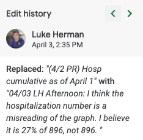
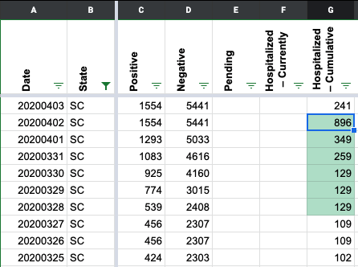
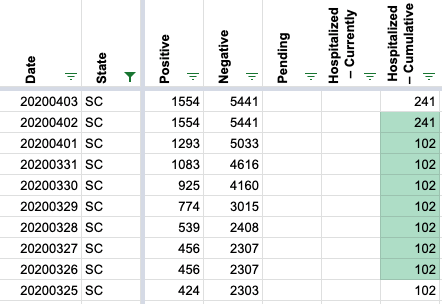

SC Hospitalization numbers 3/31 - 4/2
Issue number 185
hammer opened this issue on April 12, 2020 at 2:51 am
SC’s hospitalization numbers look wrong from 3/31 - 4/2 https://covidtracking.com/data/state/south-carolina.
- 4/2: the number “896” appears to come from a survey of 896 cases in which 27% were reported to be hospitalized at time of reported illness. Later days use 896 * .27 = 241 as cumulative number hospitalized, so we should probably just change this day to 241.
- 3/31 - 4/1: I have no theory about the origin of these numbers. There’s a survey of 424 cases in which 24% are reported hospitalized at time of illness; using the logic from 4/1 we’d have 424 * .24 = 101 as a lower bound on cumulative.
This issue has been automatically marked as stale because it has not had recent activity. It will be closed if no further activity occurs. Thank you for your contributions!
Hi @hammer and @mlgnight, Thanks for catching this. The 4/2 number does look like a misreading of the charts. According to records we noticed the mistake for hospitalizations 4/3 and corrected but did not update the historical data.  I’ve gone in and updated that value. The values from 3/26 - 4/1 do appear to have no origin. To maintain consistency with the later policy (past 4/2) of using the hospitalized numbers reporting the number from “Hospitalization Reported at Time of Reported Illness,” I’ve gone through screenshots for those days and changed the number to 102 for all cases, as that chart reflects. Before:  After: 
Also, the data goes from 129 to 259 to 349 to 241 to 896 and back down to 241